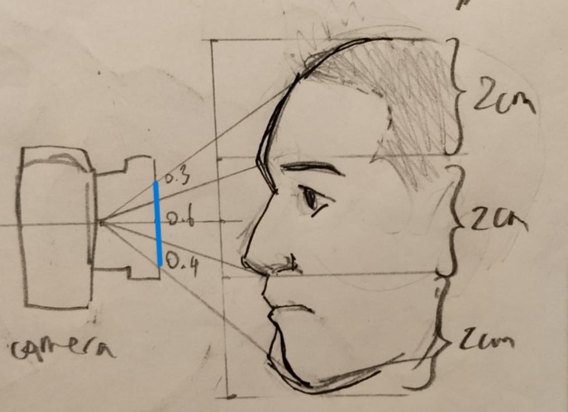
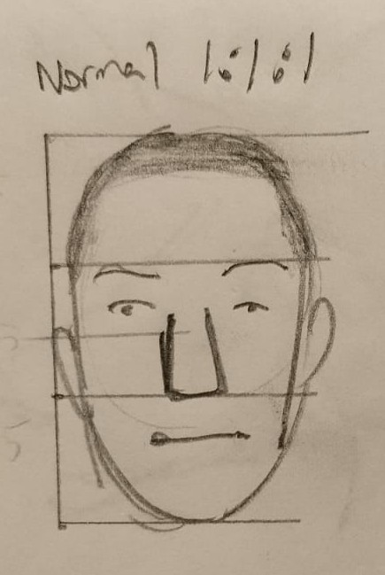
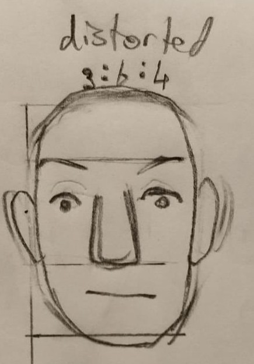

Hi! This is my webpage for hosting the non-technical asssignments for CS-4912: Computer Vision.
Here we had to take a picture one of out friends from close up (and note the distortions),
and then for far away, zoomed in.
Here are the images, the first taken from close up without zoom and the second from a distance with zoom:
My intuition about this distortion is that when close up, the ratio/between the distances of
different parts of the face and the camera is much more significant, since the overall the face's
distance from the camera is small (i.e distance vertical to plane of camera lense), the minute differenes
between the distances of particular parts of the face, such as the nose jutting out towards the camera
the forehead sloping away from the camera become more significant.
On the other hand, when the whole face is farther away, these minute differences in the elivation of the face
become neglegible in comaprison to the total distance of the face from the camera.
Since objects that are relatively close to the camera appear bigger, this would led to the close up image
being distorted such that parts of the face closer to the camera, such as the nose and chin, appear disproportionately
bigger.
On top of this ther is also the path that the light rays take to reach the camera. From close by, the ray paths from the face to the lens would be much more acute
while from far the rays follow a gentler, almost parallel slope. Because of this, in the close by situation, some
parts of the face, such as the hairline, top of the forehead and sides of the face, to become obscured due to the round
shape of the head, making certain parts of the face to be basically cut off.
I have drawn a simple diagram to illustrate this effect with the forehead and hairline.



As seen above, the hairline is just at the point where the rounded shape of the forehead infront of it partially
obscures it, making the distorted image look as if the person hairline is farther back. This can also be observed
in the actual pictures.
As mentioned previously, when taking a photo from far away with zoom, the discrepancies of size between objects
closer and farther away from the camera decreases because the distance between objects relative to the distance
between the objects and the camera decreases.
This discrepancy in sizes according to distance may cause undesired distortions as seen in the above section,
but it also gives a sense of depth to the image, as for the human eye closer objects appear larger as well. Thus,
the zoomed in image taken from far appears flatter.
Here we were meant to capture a picture of some object (a chair) in both perspective and orthographich projection.
To obtain the orthographic projection, I took a zoomed in photo of the chair from a distance, and for the perspective
projection I took a regular photo from close up.
Then we were to draw lines to highlight the straight edges. Here are the resultant pictures, first the perspective and then
the orthographic: